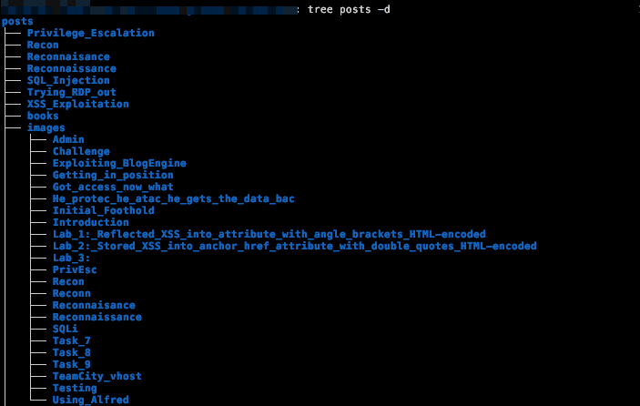

Tidying up our blog
Table of Contents
Introduction
When I first started using org-download to have pictures within my
posts, I had not exactly configured it properly, resulting in numerous
subdirectories that I was not happy with1:
label:Look-at-all-those-image-directories

Figure 1: Look at all those image directories
Moving on want that mess hidden within images/: The main directory
should be cleaner.
The plan
The plan here is to freshen up my python skills whilst creating a script to:
- Move
orgfiles and their related images to another directory (this is classic maintenance, avoiding to manually move my articles-turned-drafts) - Move a folder containing images inside of images/, whilst updating whatever links pointing to those images. If images with no links are found they are printed for manual removal.
Covering the creation process of our tool, the article shows how to:
- Develop a python function to check for links in org files pointing to images
- Develop a python function to modify the links while also moving the
directories inside the
imagesdir - Develop a python function to check for broken links
- Develop a python function to move an article to my draft subdir, along with any photos it may have.
Assumptions
Before we begin we need to make clear the constraints:
- All
orgfiles exist in one directory. No need to recompute relative paths. - All image files are of
pngformat. Minimal steps have been taken to change that in the future if necessary. - My org files do not include paths to images outside of links.
Step 0: Configuring the wrapper
I like using argparse, to easily add/remove options and manage them in
a significantly more secure and straightforward manner than if I
quickly made something from scratch.
Step 0.5: General Functions
At this point it is nice to develop some functions that will make the rest of the code more readable, maintainable (and robust, avoiding the same snippets to be used again and again).
In this “project”:
- fileIsOrg / fileIsImage function
- fileLinkRegex / imageLinkRegex
Step 1: Link Checker
Links in Files
Obviously, there are common parts in the functions described above. The most apparent one is in steps 3 and 4: There needs to be a function to: a. Find (file) links b. See where they point
Image links are slightly different than general purpose org links. Later in design, to avoid troubleshooting certain regex scenarios, I also made a different function to search for image links only
Step 2: Move Images
The problem with moving images
It is not just a simple mv. It is a simple mv along with updating all
the org-files pointing to them: and not messing the paths up is what
makes it difficult
Image specific functions
Since dealing with filepaths is so much simpler than checking for complex pattern
Final Script
TODO
Footnotes:
There will come a time (maybe) when after spending somem ore
time on these org-download will do an even better job, but till then,
I am happy to just “hide” the clutter of images inside an images
directory.